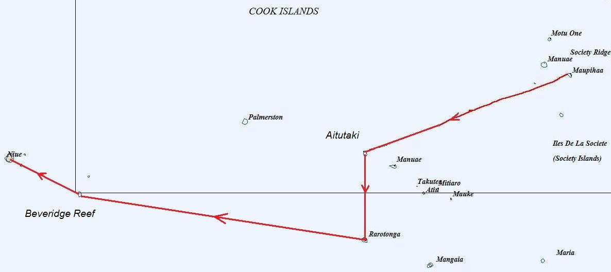

|
Cook. Traversée sans histoire de Maupihaa vers Aitutaki. Alizé 15/20N de SSE. |
|
Cook. Traversée de Aitutaki vers Rarotonga toutes voiles dehors (mais avec 10 noeuds de vent). |
|
Cook. De Rarotonga vers Beveridge Reef. 3 jours à plus de 30 noeuds. Fatiguant. |
|
Niue. De Beveridge Reef à Niue. 30 heures au spi, puis au moteur. Pétole. |
|
 |
| Date | Lieu | Log (nm) |
| 19/7 au 26/7 | Cook du sud - Aitutaki | 8500 |
| 27/7 au 9/8 | Cook du sud - Rarotonga | 8650 |
| 13/8 au 18/8 | Beveridge Reef | 9110 |
| 19/8 au 27/8 | Niue | 9250 |